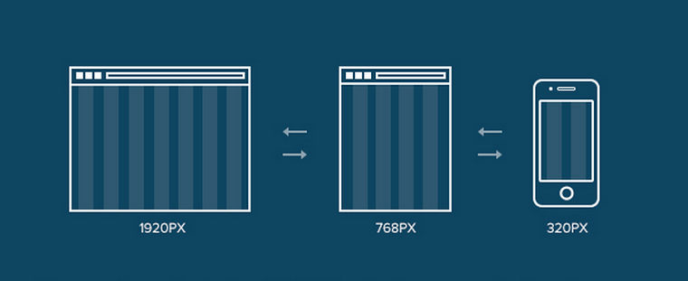

Верстка сайтів

Верстка сайту – це відповідальний процес, без якого не обходиться жоден веб-проект. Але для того, щоб створити сайт, спочатку потрібно розробити якісний макет, в якому будуть враховані і затверджені всі нюанси.
Що ви дізнаєтися з цьої статті
- Що значить зверстати сайт?
- Основні різновиди верстки
- Що таке верстка з точки зору підходу до роботи?
- Що таке адаптивна верстка сайту?
- Основні техніки реалізації
- Які переваги несе в собі адаптивність веб сайту?
Дизайн і верстка не можуть існувати одне без одного. Спочатку дизайнер створює стильний PSD-макет майбутнього проекту, потім верстальник реалізує технічну частину, трансформуючи графічне зображення в робочий інструмент. Він структурує і впорядковує всі інформаційні блоки, зображення, заголовки, підзаголовки, таблиці і т. д. так, щоб користувач не втрачав інтерес і з легкістю сприймав надану інформацію.
Що значить зверстати сайт
Це складний вид робіт, який передбачає бездоганне знання JavaScript, HTML і CSS – три кити, на яких заснована робота верстальника. HTML – це мова розмітки і основа будь-якої веб-сторінки. З його допомогою вдається створити каркас сайту, розташувавши в потрібному місці необхідні текстові елементи. Далі за роботу береться CSS – відповідає за візуальну складову. Використовуючи HTML і CSS вдається створити статичну сторінку, але, щоб вдихнути в проект життя, необхідна допомога JavaScript. Він дає сайту можливість реагувати на певні дії користувачів, роблячи його динамічним.
Професійна верстка сайту передбачає використання різних інструментів, регулярне тестування продукту і перевірку помилок. Найменший недолік може призвести до збою і некоректної роботи ресурсу. Але якщо буде виконана правильна робота, то ви отримаєте наступні переваги:
- швидке завантаження сторінок – грамотне програмування впливає на швидке відображення контенту. Чим вище швидкість, тим краще конверсія, так як користувач не встигне піти до конкурента в очікуванні завантаження сайту;
- проста підтримка – коли код правильно структурований і містить коментарі, то його підтримкою зможуть займатися інші фахівці, вносити різні зміни і не витрачати на це багато часу;
- коректна робота сайту – належне виконання функцій та відображення всіх елементів.
Веб-верстка сайту на WordPress: основні різновиди
- таблична – те, з чого почалася епоха сайтобудування. Цей метод передбачає використання різних комірок, наповнених інформацією. Мінус в тому, що для відображення сайту, потрібно дочекатися, коли прогрузиться вся таблиця. Якщо код масивний і було використано багато інформації, то цей процес може зайняти багато часу;
- блокова – більш сучасний і універсальний різновид. Блоки представляють собою незалежні елементи, які можна легко міняти місцями, що відкриває безмежні можливості для верстальника. Це дуже зручно, наприклад, якщо футер, шапка сайту або будь-який інший елемент потребує доопрацювання;
- ошарова – тут верстка сторінок це масштабна робота. Даний метод подобається дизайнерам, так як він не обмежує фантазію для створення різноманітних ефектів. Але з технічної точки зору він складно реалізується і відрізняється нестабільністю. Тут потрібне глибоке знання мов і технологій програмування. Але навіть це не гарантує те, що один і той же сайт буде по-іншому відображатися на різних пристроях і в різних браузерах;
- адаптивна – найпопулярніший метод, який сьогодні активно використовується. Він дозволяє підлаштувати сайт під будь-який пристрій.
Потрібно відзначити, що зараз жоден з перерахованих різновидів верстки не втратив своєї актуальності. Більше того, ці методи не використовуються самостійно, а ефективно комбінуються професійними розробниками один з одним.
Що таке верстка сайту з точки зору підходу до роботи
Крім різних типів верстки, існують ще різні підходи. Розглянемо основні етапи:- фіксована верстка – у всіх елементів є чітко задані параметри, які не змінюються навіть при зміні ширини браузера;
- гумова – протилежна попередньому пункту, тому здатна підлаштовуватися під різні параметри;
- aдаптивна – розробляється під певні дозволи;
- responsive – гібрид гумової і адаптивної верстки, який відрізняється високою ефективністю, але дуже складний з технічної точки зору;
- мобільна версія – самостійний проект, який цілеспрямовано розробляється для мобільного пристрою. Якщо говорити простими словами, то є окремий сайт з іншим дизайном і окремою URL-адресою.
В ідеалі верстка повинна бути кросбраузерною, мати чітку структуру, всі елементи повинні бути прописані, а код – зрозумілий і не містити помилок. Це можна вважати короткою відповіддю на питання – що таке верстка веб сайту? Не менш відповідальний момент – вибір виконавця.

Адаптивна верстка сайту
Адаптивна верстка – це верстка, при якій сайт однаково добре відображається на всіх можливих пристроях: комп’ютерах, планшетах, телефонах. Таких ресурсів з кожним роком стає все більше, адже мобільний трафік зростає, сучасні технології не стоять на місці. Вже не доцільно робити сайт, який буде зручно переглядати виключно на комп’ютері. Та й зробити адаптивний дизайн дуже просто.
Основні техніки реалізації
Підлаштовуючи сайт під мобільні пристрої, застосовують певні інструменти. Розглянемо основні елементи та способи їх реалізації, щоб верстка вийшла дійсно адаптивна.
Регулювання розширення екранів
Верстати для кожного виду пристрою окремо немає сенсу, адже це займе дуже багато часу. Та й все так швидко змінюється, що ніхто не знає, що буде в тренді завтра.
Один із способів частково вирішити проблему – робити гнучкі зображення. Весь дизайн створюють з декількох шарів з використанням в деяких місцях розумної розмітки. Змінити розмір зображення можна різними способами, один з яких використання max-width і таблиці стилів. Можна також застосовувати адаптивні зображення, для чого буде потрібно завантажити спеціальний файл.
Адаптивна верстка сайту дозволяє зробити текст підходящим для читання, незалежно від того, за допомогою якого девайсу його будуть переглядати. Це можна зробити, якщо збільшити розмір шрифту або висоту рядка. Вони налаштовуються в рамках ширини макета згідно ієрархії вмісту, яка задається за допомогою CSS.
І хоча з зображеннями справа йде трохи складніше, ніж з текстом, вони можуть маштабуватися, обрізатися або зовсім зникати виходячи з того, який тип контенту вимагається під пристрій.
Плаваюча сітка
Основоположною ланкою як зробити сайт адаптивним є макети на основі сітки. При цьому адаптивність верстки забезпечується застосуванням саме гнучкої сітки. Разом з нею між елементами постійно буде інтервал, а через свої пропорції вони зможуть підлаштовуватися під певну ширину екрану.
Медіа-запити
Такі запити являють собою код, який відповідає за гнучкість макета. Вони визначають той код, який буде застосовуватися в залежності від розмірів і орієнтації девайса. Такі коди допускають наявність декількох макетів дизайну з використанням однієї і тієї ж HTML-кодованної веб-сторінки.
Які переваги несе в собі адаптивність веб сайту
Якщо ви хочете, щоб ваш ресурс утримував першість у пошукових системах, до його розробки слід підійти серйозно. На даний момент далеко не всі хочуть переходити зі звичайної мобільної версії. Але якщо подивитися з боку СЕО просування, можна сказати, що адаптивні сайти мають ряд важливих переваг, а саме:
- гарантія того, що клієнт добре бачитиме ваш контент на будь-якому гаджеті;
- підвищення видимості ресурсу в пошукових системах;
- один сайт – одна адреса, через що авторитет ресурсу не потрібно формувати з нуля.
Виходячи з вищевикладеного, розібравшись, що таке адаптивна верстка, стає зрозуміло, з якої причини ресурс може добре ранжуватися в пошуку. Адже коли ресурс погано працює на телефоні або планшеті, зазвичай фіксується високий показник відмов.
Мінус мобільних версій в тому, що їх контент сильно урізаний в порівнянні з основним ресурсом. Тому їх позиції в пошуковій системі також не можна назвати високими. Велика кількість відмов сприймаються пошуковими системами як показник того, що даний сайт не може надати користувачам потрібну інформацію. А це призводить до падіння його позицій.

Наші контакти